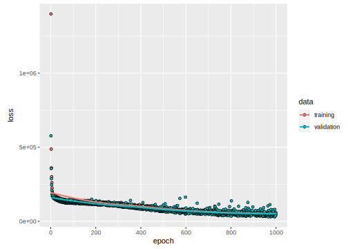
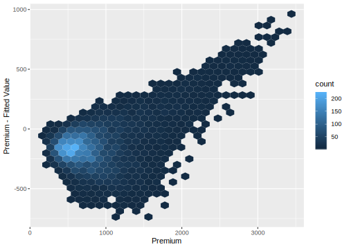
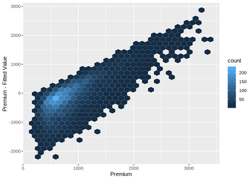
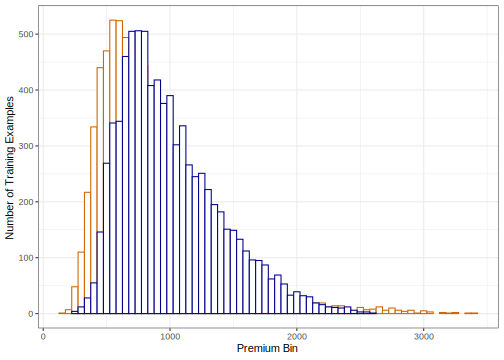

4.3 First Time leennR
Fitting the model is quite simple. This model will is trained for 1000 epochs.
history <-
model %>%
fit(
x_train,
y_train,
epochs = 1000,
batch_size = 1000,
validation_split = 0.2,
)The model summary, the fitting history, and the mean squared error are as follows.
## Model: "sequential"
## _______________________________________________________
## Layer (type) Output Shape Param #
## =======================================================
## dense (Dense) (None, 64) 768
## _______________________________________________________
## dense_1 (Dense) (None, 32) 2080
## _______________________________________________________
## dense_2 (Dense) (None, 1) 33
## =======================================================
## Total params: 2,881
## Trainable params: 2,881
## Non-trainable params: 0
## _______________________________________________________
## [1] "Mean absolute error on test set: $26.73"We can plot how far off the predictions are with histograms. The results show we have some additional research to perform if we want to refine the accuracy further. We’ll explore this further in the next section.
# predict %>%
# ggplot +
# geom_jitter(aes(x = premium, y = abs(y_hat - premium)/premium)) +
# xlab("Premium") +
# ylab("Absolute Error as % of Premium")
predict %>%
ggplot +
geom_hex(aes(x = premium, y = premium - y_hat)) +
xlab("Premium") +
ylab("Premium - Fitted Value")
# predict_test %>%
# ggplot +
# geom_jitter(aes(x = premium, y = abs(y_hat - premium)/premium)) +
# xlab("Premium") +
# ylab("Absolute Error as % of Premium")
predict_test %>%
ggplot +
geom_hex(aes(x = premium, y = premium - y_hat)) +
xlab("Premium") +
ylab("Premium - Fitted Value") 
predict %>%
ggplot +
geom_histogram(aes(x = premium, color = "premium"), binwidth = 50, color = "darkorange3", fill = "white") +
geom_histogram(aes(x = y_hat), binwidth = 50, color = "darkblue", fill = "white") +
xlab("Premium Bin") +
ylab("Number of Training Examples") +
theme_bw()